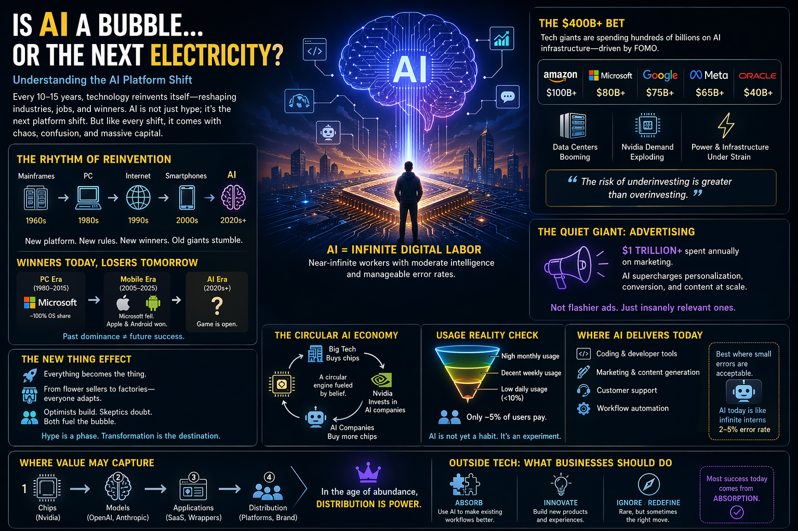

Scroll through any tech forum and you’ll see the same digital tug-of-war: “AI is overhyped.” “AI will change everything.”
Both sides sound confident. Both sides have receipts. And both, in a strange twist, are right.
Because what we’re witnessing isn’t just hype. It’s something far more chaotic, expensive, and transformative: a platform shift.
The Rhythm of Reinvention
Technology doesn’t evolve smoothly. It leaps.
First came mainframes. Then PCs. Then the internet. Then smartphones. Each wave didn’t just introduce new tools, it rewired industries, careers, and power structures.
And every time, the same illusion appears: “The current winners will stay on top.”
History disagrees.
- Microsoft ruled the PC era, then stumbled in mobile
- Yahoo dominated early internet, then faded into a footnote
- Apple reinvented itself through smartphones
Now the stage is resetting again.
AI isn’t entering the world quietly. It’s rearranging the furniture while people are still sitting on it.
The “New Thing” Effect
Every platform shift becomes the thing. Not just in tech, but everywhere.
A flower seller once needed only a street corner. Then came websites. Then Instagram. Now? Even a florist experiments with AI generated ads, captions, and visuals.
When a platform shift happens, it doesn’t ask for permission. It spreads.
And with that spread comes a predictable storm:
- Builders rush in
- Investors pour money
- Skeptics push back
This tension creates what looks like a bubble. But bubbles are often just early-stage confusion wearing a price tag.
The $400 Billion Question
If you want to understand belief, don’t read opinions. Follow money.
In 2025 alone, tech giants poured hundreds of billions into AI infrastructure. Data centers are rising faster than office buildings. Power grids are straining. Chips are selling like rare minerals.
Why? Because the biggest fear in tech isn’t failure. It’s irrelevance.
As one executive put it:
The risk of underinvesting is greater than overinvesting.
Translation: If AI becomes the next platform and you’re not in it, you’re out of the game entirely.
A Strange Economic Loop
Here’s where things get almost poetic.
Companies buy chips from Nvidia. Nvidia invests in AI companies. Those AI companies use that money… to buy more Nvidia chips. It’s a circular engine fueled by belief and necessity.
No one wants anyone to fail. Because if one pillar collapses, the ripple spreads. This isn’t a normal market. It’s an ecosystem holding its breath.
The Great Commoditization
Three years ago, the question was: “Which AI model is the best?”
Today, that question feels outdated. Models are converging. Benchmarks are neck and neck. New releases blur into each other weekly.
AI models are starting to resemble something unexpected: potatoes. Interchangeable. Price-sensitive. Hard to differentiate.
So if the technology itself becomes a commodity, what actually matters? Distribution. Brand. Habit. The winner isn’t necessarily the smartest model. It’s the one people default to without thinking.
The Usage Reality Nobody Talks About
Here’s a quiet truth hiding behind the hype: Millions use AI tools. But very few use them daily. Daily usage is still under 10%. Only a small fraction of users pay. That’s not what dominance looks like. That’s what early adoption looks like.
AI today is like a gym membership in January. Everyone signs up. Few build a habit. The real challenge isn’t improving intelligence. It’s embedding AI into everyday workflows so deeply that not using it feels inconvenient.
Where AI Actually Works (Right Now)
Despite all the grand narratives, AI’s real impact today is surprisingly grounded. It thrives in places where speed matters more than perfection, scale beats precision, and small errors are acceptable. Think: coding assistants, marketing content, customer support, and workflow automation.
In essence, AI behaves like an army of eager interns: fast, capable, occasionally wrong. And that’s enough to create massive value.
The Quiet Giant: Advertising
While everyone debates artificial intelligence, something more subtle is happening. AI is quietly rewriting how companies talk to customers. A trillion dollars is spent annually on marketing. AI improves targeting, personalization, and content creation—not by making ads flashier, but by making them uncannily relevant.
Imagine ads that adapt to your intent in real time, speak your language literally and emotionally, and change daily, not quarterly. It’s less Mad Men, more algorithmic persuasion. And it works.
The Real Question Isn’t “Who Wins?”
It’s where value settles. Is it the chip makers building the foundation? The model creators training intelligence? The apps wrapping AI into products? Or the platforms controlling user access? Right now, the answer seems fluid. But one pattern is emerging: when technology becomes abundant, distribution becomes power.
The World Outside Tech
For businesses not building AI, the question is simpler: what do we do with it? Most are taking the same path: absorb it into existing workflows, experiment cautiously, and wait for clearer ROI. Full transformation is rare. Practical usage is everywhere.

Understanding the AI platform shift at a glance.
The Final Lens: Infinite Labor
If the steam engine multiplied human effort, AI multiplies cognition. It offers something unprecedented: near-infinite digital workers with moderate intelligence and manageable error rates. That changes the equation.
The question is no longer: “What can one team build?” It becomes: “What can you build with thousands of semi-reliable minds working in parallel?”
So… Bubble or Revolution?
Both. There will be overinvestment, failed companies, hype cycles, and corrections. But beneath all that noise, something deeper is happening. The internet was once dismissed as a fad. Today it’s invisible infrastructure. AI is on a similar trajectory. Messy at first. Essential later.
Closing Thought
The future of AI won’t be decided by who builds the smartest model. It will be decided by who understands human behavior, earns trust, captures attention, and becomes impossible to ignore—because in the end, technology doesn’t win.